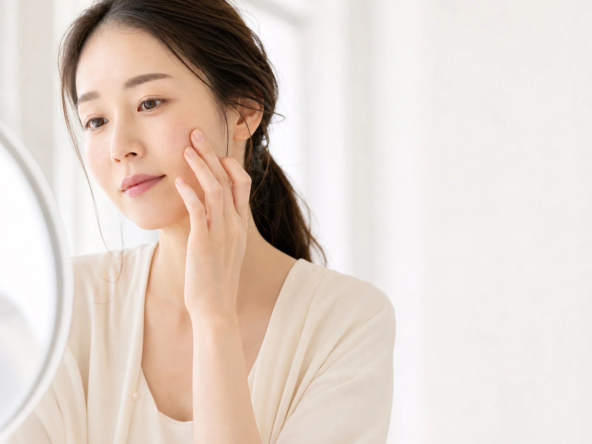
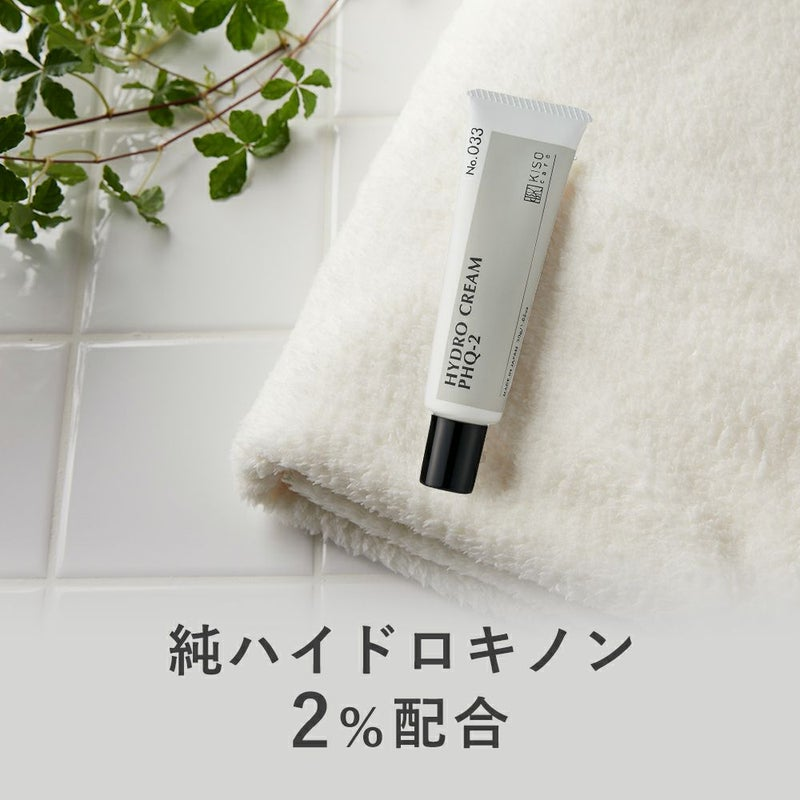
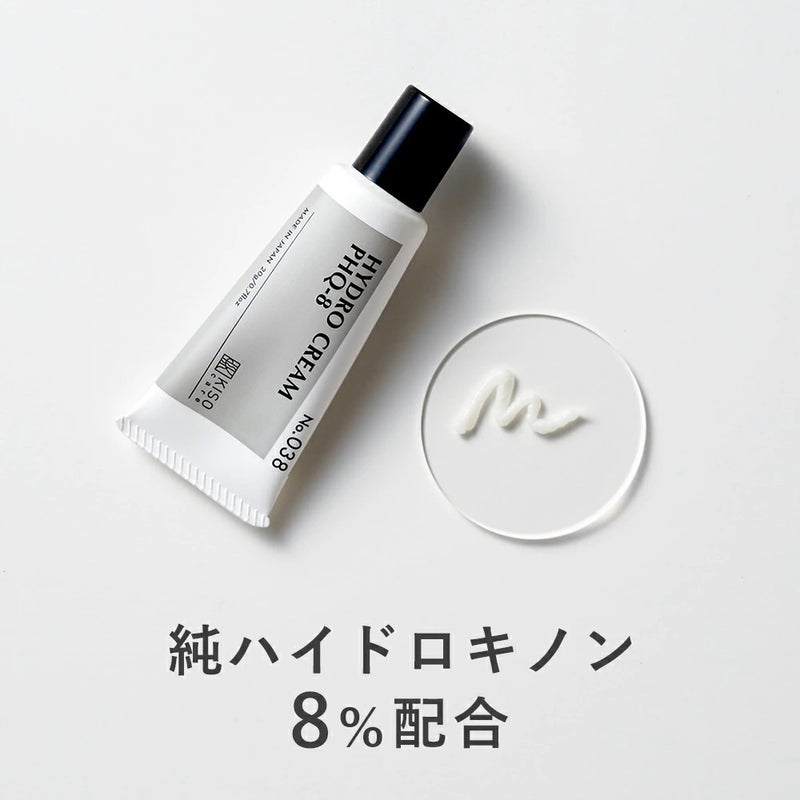
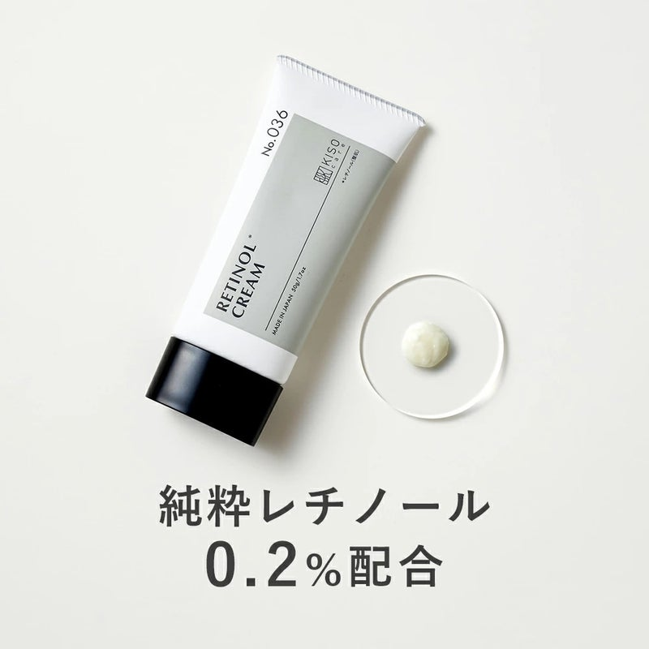
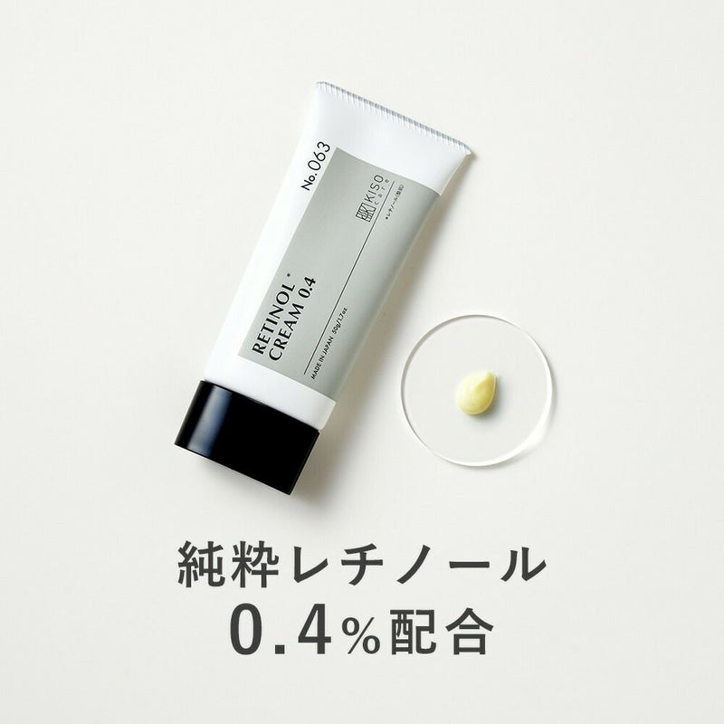
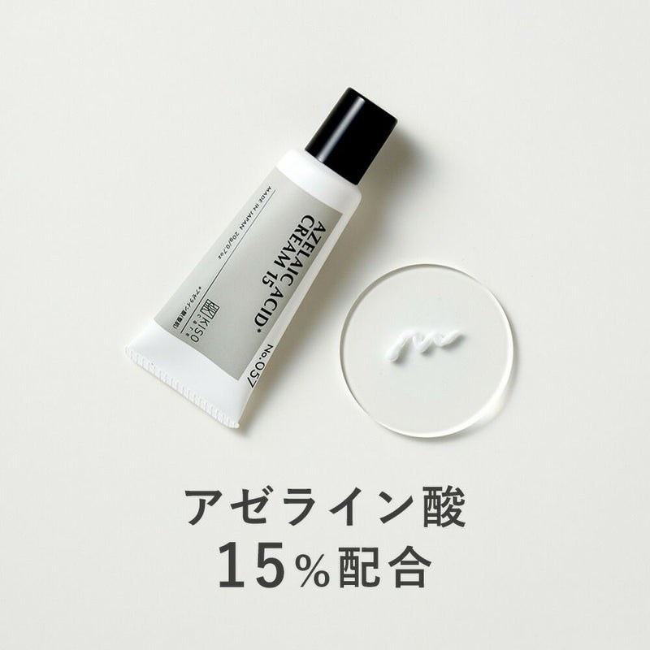

目的
乾燥によるくすみ、ハリ、皮脂とのバランス
KISO SKINCARE EDIT
ハイドロキノン、レチノール、アゼライン酸。話題性だけで決めず、肌状態・使用する時間・成分濃度から、今の自分に取り入れやすい1本を整理します。
5商品を比較する →
SKIN CONCERN
気になる部分が同じでも、肌の乾燥しやすさや成分の使用経験は人それぞれ。高濃度だけを基準にせず、公式の使用方法と注意事項まで見て選びます。
まずは、使い続けられる濃度と使い方から。
AFTER THE EDIT
夜だけの部分使いか、朝晩使えるクリームか。目的と使用頻度を先に決めて、毎日のケアへ無理なく取り入れられる候補を絞ります。
強さではなく、今の肌との相性で選ぶ。乾燥によるくすみ、ハリ、皮脂とのバランス
成分の使用経験と肌状態に合うか
夜の部分使いか、朝晩のケアか
COMPARE FIVE
価格や在庫は変動します。購入前に販売ページで最新情報をご確認ください。
| No. | 商品 | 仕様1 | 仕様2 | 仕様3 | おすすめする人 |
|---|---|---|---|---|---|
| 01 | KISO ハイドロクリーム PHQ-2 | 30g | 純ハイドロキノン2％ | 夜の部分使い | ハイドロキノン配合クリームを、PHQ-8より低い濃度から検討したい人。 |
| 02 | KISO ハイドロクリーム PHQ-8 | 20g | 純ハイドロキノン8％ | 普通肌向け・夜の部分使い | 公式の対象肌・使用方法・注意事項を確認したうえで、高濃度タイプを比較したい人。 |
| 03 | KISO REショットクリーム 0.2％ | 50g | レチノール0.2％ | 敏感肌向け表示 | ハリや化粧ノリを意識し、0.4％より低い濃度からレチノール配合クリームを比較したい人。 |
| 04 | KISO REクリーム 0.4％ | 50g | レチノール0.4％ | 普通肌向け表示 | レチノール配合化粧品の使用経験があり、公式の使用方法を守って濃度違いを比べたい人。 |
| 05 | KISO バランシングクリーム AZ 15％ | 20g | アゼライン酸15％ | 朝晩使用 | 皮脂と水分のバランスやキメの乱れが気になり、レチノール以外の整肌成分も比べたい人。 |
PRODUCT NOTES
カード全体から商品ページへ移動できます。

ハイドロキノン配合クリームを、PHQ-8より低い濃度から検討したい人。
KISOCARE公式で確認する →
公式の対象肌・使用方法・注意事項を確認したうえで、高濃度タイプを比較したい人。
KISOCARE公式で確認する →
ハリや化粧ノリを意識し、0.4％より低い濃度からレチノール配合クリームを比較したい人。
KISOCARE公式で確認する →
レチノール配合化粧品の使用経験があり、公式の使用方法を守って濃度違いを比べたい人。
KISOCARE公式で確認する →
皮脂と水分のバランスやキメの乱れが気になり、レチノール以外の整肌成分も比べたい人。
KISOCARE公式で確認する →